这个讲义比较老，但是原理讲得非常细致，建议作为学习的第一部分。
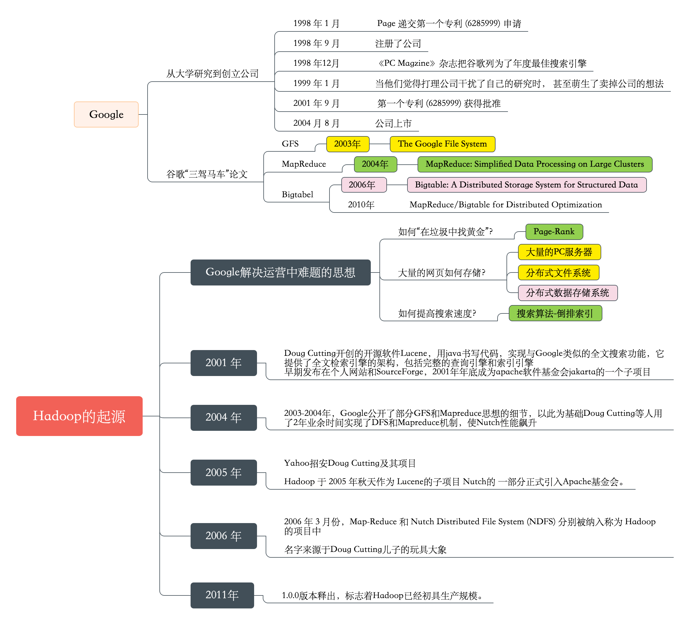
- 1998@The Anatomy of a Large-Scale Hypertextual Web Search Engine
- 1998@The PageRank Citation Ranking: Bringing Order to the Web
- 2003@ai.google@The Google File System
- 2004@www.usenix.org@MapReduce: Simplified Data Processing on Large Clusters—
- 2004@ai.google@MapReduce: Simplified Data Processing on Large Clusters
- 2006@www.usenix.org@Bigtable: A Distributed Storage System for Structured Data
- 2010@ai.google@MapReduce/Bigtable for Distributed Optimization
国内中文翻译参考：
Hadoop的思想之源：Google
Google搜索引擎，Gmail，安卓，AppspotGoogle Maps，Google earth，Google学术，Google翻译，Google+，下一步Google what？？
大家比较熟悉的Google产品：
- google搜索引擎 www.google.com.hk
- google学术搜索 scholar.google.com.hk
- android操作系统
- Chrome
Hadoop几乎是google搜索引擎有关技术的百分之一百的山寨版。
Google的低成本之道
- 不使用超级计算机，不使用存储（淘宝的去i，去e，去o之路）
- 大量使用普通的pc服务器（去掉机箱，外设，硬盘），提供有冗余的集群服务
- 全世界多个数据中心，有些附带发电厂
- 运营商向Google倒付费
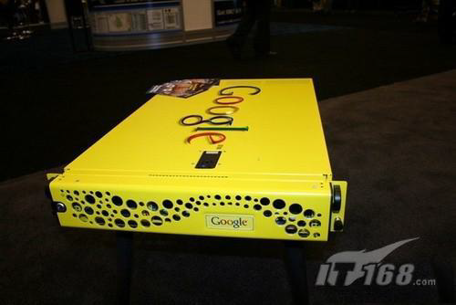
集装箱数据中心
- 位于 Mountain View， Calif 总部的数据中心
- 总功率为10000千瓦，拥有45个集装箱，每个集装箱中有1160台服务器，该数据中心的能效比为1.25（ PUE 为 1 表示数据中心没有能源损耗，而根据2006年的统计，一般公司数据中心的能效比为 2.0 或更高。Google 的 1.16 已经低于美国能源部2011年的1.2 的目标）
Google作为一家互联网公司，在创业的时候是很穷的，创始人是两个大学生。当然现在已经发财了，大发特发，但是当初那种节约的思想到今天还在持续。
实际上在世界上任何一家互联网公司，一般来说都是比较省的，为什么呢？因为互联网公司的营业模式通常都会不是很成熟，前期都会很烧钱，烧完钱后还能不能继续下去还是个未知数，因此遇到烧钱的事都会比较谨慎，他们很可能不会去购买很昂贵的硬件。
那么像Google这么大的规模，如果在一台超级计算机上跑，像天河那种估计也跑不动，如果去买很多超级计算机，那估计没有这个能力。另外像Google的信息量非常大，需要很大的存储，而存储也很贵。还有软件，例如数据存在Oracle中，那么购买license，估计把Google卖给Oracle都不够。因此Google使用大量的PC服务器。
由于只需要CPU、内存和主板，因此一开始Google将机箱都去掉了，当然现在已经加了机箱。
Google面对的数据和计算难题
google解决运营中难题的思想后来就成了Hadoop
大量的网页如何存储？
通过爬虫去爬去大量的网页，这些网页如何存取呢？Google不会选择昂贵的存储设备，google的服务器都是没有硬盘的，爬回来的网页都存放在内存里面，来加快检索的速度。如果断电了，是不是内存中失去信息了，Google会采取冗余的方法，hadoop不会将数据存在内存中，但是同样也采用冗余的方式，采用多节点写入。
搜索算法-倒排索引
搜索的速度一般在毫秒级别，例如自己手动做个实验，去Google搜索一个关键字耗时0.45秒。
如果我们在关系型数据库中去近似匹配索引这个关键字时，例如
select * from tb where col like '%索引%'; |
这个是时候时不能使用到索引的，上亿行记录时速度更慢，当然现在有全文索引，但是速度肯定还是达不到毫秒级别的。
Google如何快速搜索网页的呢？主要是用了一种倒排索引的技术，我们可以对全文进行索引，但是索引的关键字，并不是文章内容的全部，而是首先将文章进行分词。
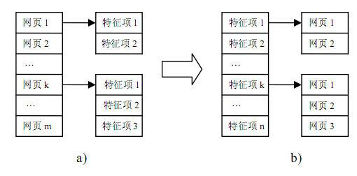
举个例子
文章1我爱北京天安门，进行分词：
- 我
- 爱
- 北京
- 天安门
文章2我爱你北京，进行分词：
- 我
- 爱
- 你
- 北京
根据两个文章的分词统计，得到统计表
| 单词ID | 单词 | 倒叙排列表 |
|---|---|---|
| 1 | 我 | (1:1),(2:1) |
| 2 | 爱 | (1:2),(2:2) |
| 3 | 北京 | (1:3),(2:4) |
| 4 | 天安门 | (1:5) |
| 5 | 你 | (2:3) |
单词我出现在标识号为1的网站的1的位置，还出现在标识为2的网站的1的位置。
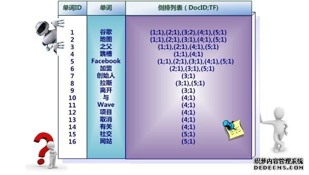
因此倒排列表可以快速进行查询。
这里还有一个难题，就是分词，英语中分词非常方便，但是中文、日语，由于词汇之间没有一个明显的分界，这里有一个方法，例如用字典。
我爱北京天安门。我、爱、北、北京、天、安、门、天安门，如果在字典中，则分词 |
Page-Rank计算问题
Page Rank是Google最核心的算法，用于给每个网页价值评分，是Google“在垃圾中找黄金”的关键算法，这个算法成就了今天的Google！
如果将搜索的网页不加过滤时全部推送给客户，那么就会有很多垃圾网站。
Google通过Page-Rank对网页进行计算排名。
Page Rank从来没有被Google公开过，大家都是从Google开放出来的数学论文去探究的，这个是Google的核心秘密。
算法体验-Google矩阵
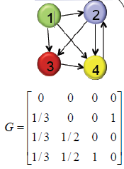
上图中的矩阵是如何得到的呢？
从源端到目标端有多少个指向
| 目标\ | 源端 | 1号网页 | 2号网页 | 3号网页 | 4号网页 |
|---|---|---|---|---|---|
| 1号网页 | 0 | 0 | 0 | 0 | |
| 2号网页 | 1 | 0 | 0 | 1 | |
| 3号网页 | 1 | 1 | 0 | 0 | |
| 4号网页 | 1 | 1 | 1 | 0 | |
| Total | 3 | 2 | 1 | 1 |
通过如上统计得到矩阵
至此，我们通过一个小实验已经体验了一次Page Rank的计算过程，接下来我们详细来了解该算法。
PageRank简介
- 1998年，斯坦福大学的Brin和Page第一次提出了基于网页链接分析的算法PageRank，并在此基础上诞生了一个伟大的公司Google
- PageRank借鉴了引文分析的基本思想，认为一个超链接（类似引文分析中的一次引用）就是一个推荐，一个拥有更多入链的网页应该比一个更少入链的网页更加重要。
- 但是与被引次数不同的是，PageRank不仅是考虑入链网页的多少，还考虑入链的网页的重要性，PageRank算法有个假设，如果一个网页被一个重要的网页链接，那么它也应该是一个重要的网页。
- PageRank算法是综合考虑入链网页的数量和质量从而计算网页的分数。
PageRank算法
Google的算法
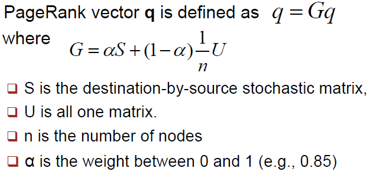
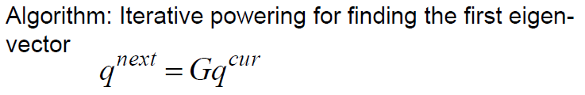
算法:求出第一个特征向量的递推方法 |
计算PR值
通过算法体验中的小例子，我们人工计算了4个网页的PR值，但是Google要计算的网页可能是十几个亿，那么矩阵的元素有十几亿乘以十几亿，下面看看用多台计算机，分布式地计算，如何实现？
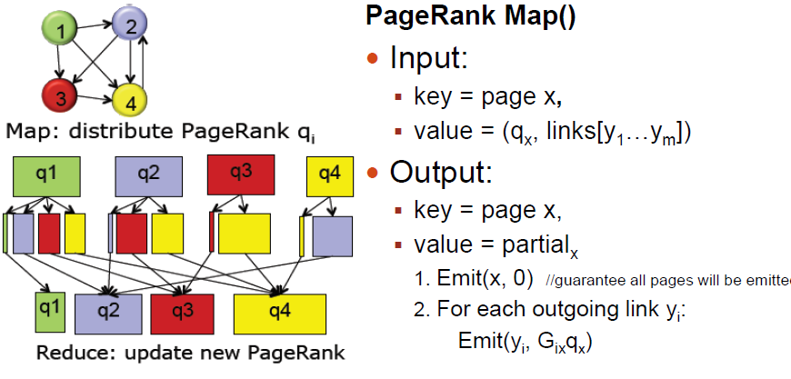
网页分布在不同的服务器节点上
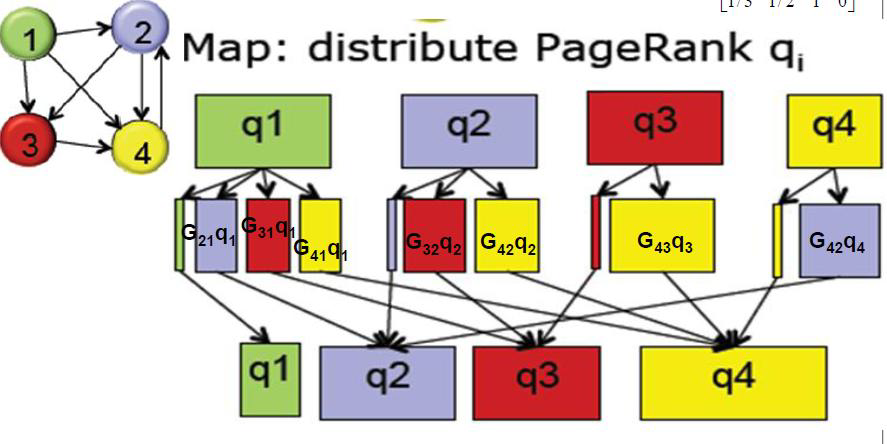
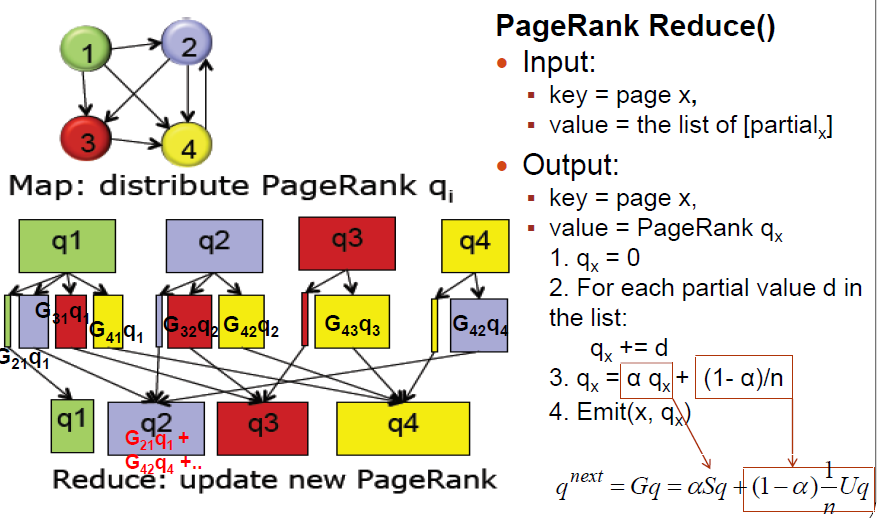
将一个巨大的计算任务，通过map映射到各个的节点来进行分布式计算，每个节点只要抗下一小块负荷，通过两万个屌丝就变成了高富帅，然后汇总到一个节点，汇总的过程叫做reduce，将汇总的结果再分发到各个节点，再汇总，反复多次后，pagerank就被算出来了。
Google带给我们的关键技术和思想
- GFS
- Map-Reduce
- Bigtable（后面讲）
Hadoop的源起——Lucene
- Doug Cutting开创的开源软件，用java书写代码，实现与Google类似的全文搜索功能，它提供了全文检索引擎的架构，包括完整的查询引擎和索引引擎
- 早期发布在个人网站和SourceForge，2001年年底成为apache软件基金会jakarta的一个子项目
- Lucene的目的是为软件开发人员提供一个简单易用的工具包，以方便的在目标系统中实现全文检索的功能，或者是以此为基础建立起完整的全文检索引擎
- 对于大数量的场景，Lucene面对与Google同样的困难。迫使Doug Cutting学习和模仿Google解决这些问题的办法
- 一个微缩版：Nutch
从lucene到nutch，从nutch到hadoop
2003-2004年，Google公开了部分GFS和Mapreduce思想的细节，以此为基础Doug Cutting等人用了2年业余时间实现了DFS和Mapreduce机制，使Nutch性能飙升
Yahoo招安Doug Cutting及其项目
- Hadoop 于 2005 年秋天作为 Lucene的子项目 Nutch的 一部分正式引入Apache基金会。2006 年 3 月份，Map-Reduce 和 Nutch Distributed File System (NDFS) 分别被纳入称为 Hadoop 的项目中
- 名字来源于Doug Cutting儿子的玩具大象
目前Hadoop达到的高度
- 实现云计算的事实标准开源软件
- 包含数十个具有强大生命力的子项目
- 已经能在数千节点上运行，处理数据量和排序时间不断打破世界纪录
Hadoop子项目家族
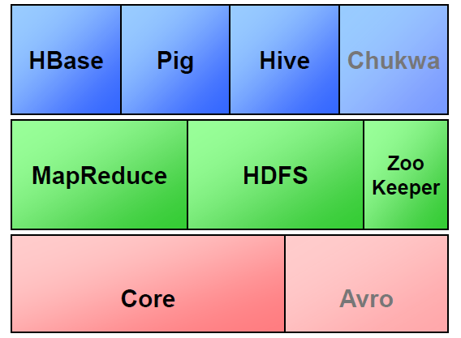
- MapReduce和HDFS是Hadoop的两大支柱。
- Hbase：列式存储
- Pig：在Hadoop上进行开发的语言主要我们都知道Hadoop是Java写的，但是我们也需要一些其他语言来支持，Pig就类似于shell命令，自动将shell命令转化为MapReduce的语言，就像是一个转换器。
- Hive：是一个非常有用的子项目，用于SQL开发
Hadoop的架构
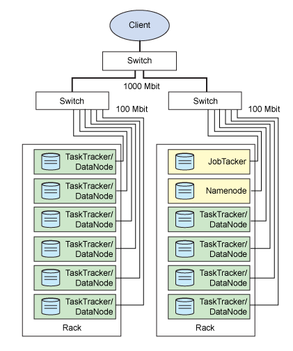
首先给大家讲一下Hadoop的架构，让大家有一些基本的认识。
上图是按照机房的机柜来画的，每一个长方形是一个物理节点，通过网线连接到交换机。大家可以看到有些标识：datanode、namenode、jobtracker、tasktracker等，这些都是后台进程。
这里面最重要的就是namenode。
Namenode
Namenode可以翻译成“名称节点”，是HDFS的守护程序，他起到分布式文件系统的总控的作用。首先会记录所有的元数据，比如，会记录每一个文件是怎么记录的，会记录在哪个节点，也会对内存和IO进行管理。
访问Hadoop集群时，一般情况下会先访问Namenode，了解数据分布的情况后，才能去具体的数据节点访问数据。NameNode还是单点（2012年），发生故障会导致集群故障
HDFS的守护程序
纪录文件是如何分割成数据块的，以及这些数据块被存储到哪些节点上
对内存和I/O进行集中管理
是个单点，发生故障将使集群崩溃
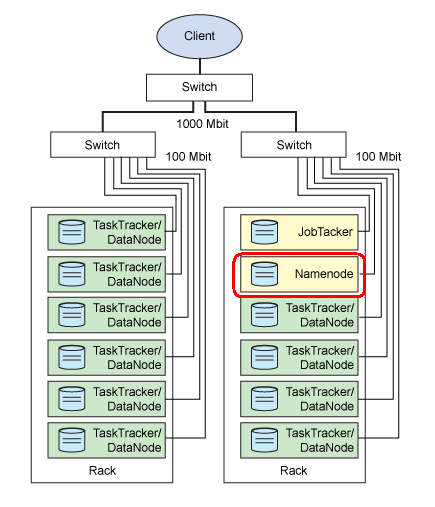
Secondary Namenode
Secondary Namenode可以翻译为“辅助节点”，实时同步Namenode的元数据，一旦Namenode故障，则可以手动切换到辅助节点。目前不能自动故障转移（2012年）。
- 监控HDFS状态的辅助后台程序
- 每个集群都有一个
- 与NameNode进行通讯，定期保存HDFS元数据快照
- 当NameNode故障可以作为备用NameNode使用
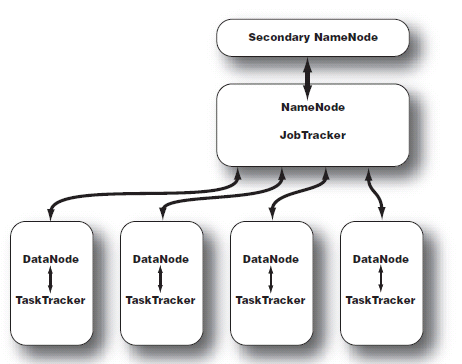
DataNode
DataNode是运行在数据节点的后台进程，数据节点运行在子节点，我们称存放数据的节点为slave。而Namenode、secondary namenode我们称为master。
每台从服务器都运行一个
负责把HDFS数据块读写到本地文件系统
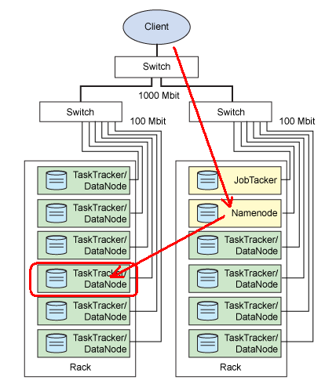
JobTracker
作业跟踪器，运行在master上的很重要的进程，对MapReduce体系的总控作用。
- 用于处理作业（用户提交代码）的后台程序
- 决定有哪些文件参与处理，然后切割task并分配节点
- 监控task，重启失败的task（于不同的节点）
- 每个集群只有唯一一个JobTracker，位于Master节点
TaskTracker
在Slave中既有管理HDFS的DataNode，又有管理MapReduce的TaskTracker
- 位于slave节点上，与datanode结合（代码与数据一起的原则）
- 管理各自节点上的task（由jobtracker分配）
- 每个节点只有一个tasktracker，但一个tasktracker可以启动多个jvm，用于并行执行map或者reduce任务
- 与jobtracker交互
Master与Slave
测试环境可以选择3台服务器，一台作为Master，两台作为Slave
- Master：Namenode、Secondary Namenode、Jobtracker。浏览器（用于观看 管理界面），其它Hadoop工具
- Slave：Tasktracker、Datanode
- Master不是唯一的
Why hadoop？
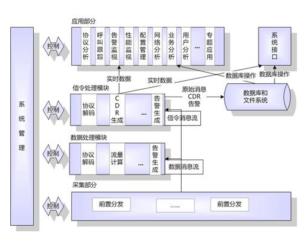
场景：电信运营商信令分析与监测
- 原数据库服务器配置：HP小型机，128G内存，48颗CPU，2节点RAC，其中一个节点用于入库，另外一个节点用于查询
- 存储：HP虚拟化存储，>1000个盘
- 数据库架构采用Oracle双节点RAC
- 问题：1 入库瓶颈 2 查询瓶颈
数据分析者面临的问题
- 数据日趋庞大，无论是入库和查询，都出现性能瓶颈
- 用户的应用和分析结果呈整合趋势，对实时性和响应时间要求越来越高
- 使用的模型越来越复杂，计算量指数级上升
数据分析者期待的解决方案
- 完美解决性能瓶颈，在可见未来不容易出现新瓶颈
- 过去所拥有的技能可以平稳过渡。比如SQL、R
- 转移平台的成本有多高？平台软硬件成本，再开发成本，技能再培养成本，维护成本
Hadoop的思想
100个屌丝可以替代一个高富帅
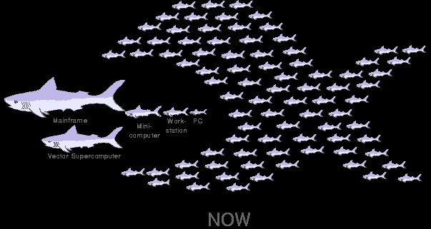
Why not Hadoop？
- Java？
- 难以驾驭？
- 数据集成困难？
- Hadoop vs Oracle
Hadoop体系下的分析手段
- 主流：Java程序
- 轻量级的脚本语言：Pig
- SQL技巧平稳过渡：Hive
- NoSQL：HBase
课后练习_通过PageRank算法计算网页PR值
网页之间的链家指向关系如下图所示。
graph LR |
使用markdown画出来稍微丑了点，但是网站间的指向是没有问题的。也可以参照下图：
第一步：计算每一个网站的“概率转移矩阵”，我们用$S_a S_b S_c S_d $表示。
如何来计算概率转移矩阵呢？通俗易懂的方法 指向某个网站的个数/源端总的指向数
1. 如果我是一个网站，那么我链接了多少个网站（除自己以外的）表示为 N ？比如A网站，链接了B、C、D，则一共链接了3个网站，则N=3。 |
如果指向同一个网站的链接数为多个，也只算1
第二步：根据 $G = \alpha S + ( 1 - \alpha ) \frac{1}{N} U$ 计算 $G_a G_b G_c G_d$
$\alpha$ 为0~1之间的值，是google工程师的一个经验值，例如0.85
$S$ 是第一步中计算的网站概率转移矩阵
$\frac{1}{N} U$ 其中N为网页的总数，$U$ 为元素全为 $1$ 的 $N$ 阶向量；例如题目中N=4，那么
当$\alpha = 0.85$ 时，计算$G_a G_b G_c G_d$ 如下：
第三步：根据公式 $ q^{next}=Gq^{cur} $ 求出 $q$ 的收敛值。
- 1>向量$q$的初始值是元素全为1的 $N$阶向量
- 2> 计算$q^{next}$
- 3>判断$q^{next}是否等于q^{cur} $，如果不相等，则继续以上两步骤，直到$q^{next}=q^{cur} $
按照上面的步骤我们计算一下：
第一轮
当
时，
此时$q^{next}!=q^{cur} $,则
继续求 $q^{next}$
后续循环不再列出，最终得到收敛的$q$值。
通过python脚本协助计算结果如下 |